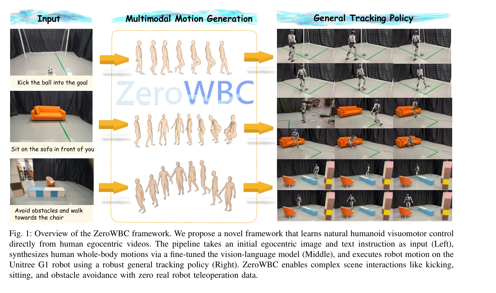
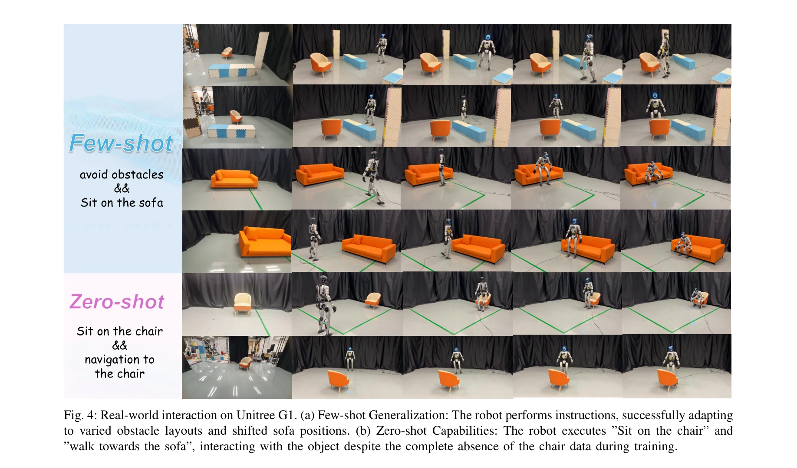
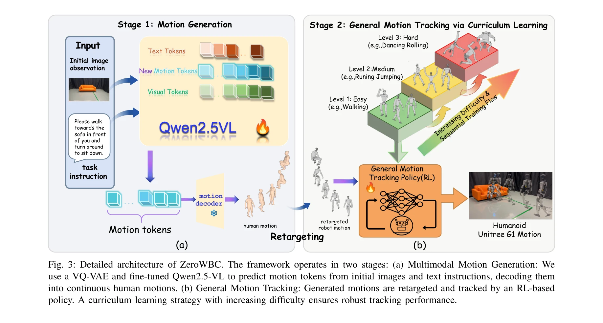

저자: Haoran Yang, Jiacheng Bao, Yucheng Xin, Haoming Song, Yuyang Tian, Bin Zhao, Dong Wang, Xuelong Li | 날짜: 2026-03-10 | DOI: 10.48550/arXiv.2603.09170

Fig. 1: Overview of the ZeroWBC framework. We propose a novel framework that learns natural humanoid visuomotor control
ZeroWBC는 인간의 egocentric 비디오로부터 직접 학습하여 휴머노이드 로봇의 자연스러운 전신 제어를 실현하는 프레임워크로, 비용이 많이 드는 텔레오퍼레이션 데이터 수집을 제거한다.

Fig. 4: Real-world interaction on Unitree G1. (a) Few-shot Generalization: The robot performs instructions, successfully

Fig. 3: Detailed architecture of ZeroWBC. The framework operates in two stages: (a) Multimodal Motion Generation: We
총평: ZeroWBC는 인간 egocentric 비디오를 활용하여 비싼 로봇 데이터 수집을 제거하면서도 자연스럽고 다양한 전신 제어를 실현하는 실질적으로 중요한 기여를 한다. 다만 정량적 평가 결과와 다른 플랫폼으로의 일반화 검증이 더 필요하다.